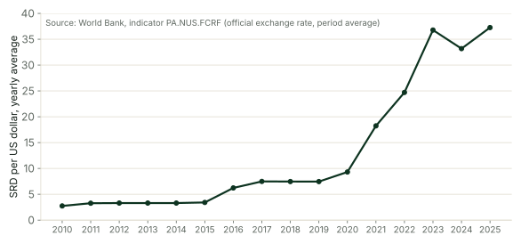

The question
De vraag
How many Surinamese dollars (SRD) did one US dollar cost in each year from 2010 to 2025? How much more does an imported item that costs US$10 cost a family in 2025 than in 2019?
Hoeveel Surinaamse dollars (SRD) kostte één Amerikaanse dollar in elk jaar van 2010 tot 2025? Hoeveel meer kost een geïmporteerd product van US$10 een gezin in 2025 dan in 2019?
The two questions are one question about a family's shopping. An importer pays for food in US dollars before it reaches the shop, so the exchange rate reaches the family through the SRD price on the shelf. The team's work is to turn sixteen yearly numbers into a note that family can act on, and to show every step that led to it.
De twee vragen zijn één vraag over de boodschappen van een gezin. Een importeur betaalt voedsel in Amerikaanse dollars voordat het de winkel bereikt, dus de wisselkoers bereikt het gezin via de SRD-prijs op de plank. Het werk van het team is om zestien jaarcijfers om te zetten in een notitie waar dat gezin iets mee kan, en om elke stap ernaartoe te laten zien.
The question is small on purpose. One series, sixteen numbers, no missing values. That leaves the week for the method: ask the AI, read what it writes, predict, run, check, and log every claim. The method is what the team carries into week 2, where the data is larger and the question has more parts.
De vraag is met opzet klein. Eén reeks, zestien getallen, geen ontbrekende waarden. Zo blijft de week over voor de methode: vraag de AI, lees wat die schrijft, voorspel, voer uit, controleer en noteer elke bewering. Die methode neemt het team mee naar week 2, waar de data groter is en de vraag meer onderdelen heeft.
Who it is for
Voor wie het is
The work is for a family in Suriname that buys imported food. By Friday, the team hands that family a note of about 150 words and one chart. The note says what a US$10 item cost in SRD in 2019 and in 2025, which years the rate held still, what the exchange rate did to a weekly basket the team priced, and one thing the yearly table cannot tell them. It names the World Bank as its source.
Het werk is voor een gezin in Suriname dat geïmporteerd voedsel koopt. Op vrijdag geeft het team dat gezin een notitie van ongeveer 150 woorden en één grafiek. De notitie zegt wat een product van US$10 in 2019 en in 2025 in SRD kostte, in welke jaren de koers stilstond, wat de wisselkoers deed met een wekelijks mandje dat het team prijsde, en één ding dat de jaartabel hun niet kan vertellen. Ze noemt de Wereldbank als bron.
The family does not read code and will not open the notebook. Every sentence in the note is written for a reader who sees one page, once, at a kitchen table. The notebook exists so that a fellow, a classmate or the family's accountant could trace every number in the note back to the table.
Het gezin leest geen code en opent het notebook niet. Elke zin in de notitie is geschreven voor een lezer die één pagina ziet, één keer, aan een keukentafel. Het notebook bestaat zodat een fellow, een klasgenoot of de boekhouder van het gezin elk getal in de notitie kan terugvoeren op de tabel.
The data
De data
The World Bank publishes Suriname's official exchange rate in SRD per US dollar, averaged over each year (indicator PA.NUS.FCRF). The series was last updated on 8 October 2026. The table has 16 rows, one for each year from 2010 to 2025, two columns, year and srd_per_usd, and no missing values.
De Wereldbank publiceert de officiële wisselkoers van Suriname in SRD per Amerikaanse dollar, gemiddeld over elk jaar (indicator PA.NUS.FCRF). De reeks is voor het laatst bijgewerkt op 8 oktober 2026. De tabel heeft 16 rijen, één voor elk jaar van 2010 tot 2025, twee kolommen, year en srd_per_usd, en geen ontbrekende waarden.
Each value is a yearly average. The rate on a given day of a year can sit far from that year's average, and the table cannot show it. The team meets this limit in round 3 and writes it into the note.
Elke waarde is een jaargemiddelde. De koers op een bepaalde dag van een jaar kan ver van het gemiddelde van dat jaar liggen, en de tabel kan dat niet laten zien. Het team komt deze grens in ronde 3 tegen en schrijft haar in de notitie.
The raw World Bank response is kept in the course folder beside the cleaned table, so anyone can confirm that the table matches the source. The notebook's loading cell reads the table from the course folder and falls back to the World Bank's own service when the file is not there.
Het ruwe antwoord van de Wereldbank wordt in de cursusmap bewaard naast de opgeschoonde tabel, zodat iedereen kan nagaan dat de tabel met de bron overeenkomt. De laadcel van het notebook leest de tabel uit de cursusmap en valt terug op de dienst van de Wereldbank zelf als het bestand er niet is.
Download the table (CSV)Download de tabel (CSV)

Your team
Je team
Teams of four hold the four roles, which rotate every week. The roles divide responsibility, not typing: everyone asks the AI, everyone reads code, everyone can explain every number on Friday.
Teams van vier verdelen de vier rollen, die elke week wisselen. De rollen verdelen verantwoordelijkheid, geen typwerk: iedereen vraagt de AI, iedereen leest code, iedereen kan vrijdag elk getal uitleggen.
- The builder writes and runs the notebook with the AI assistant, and keeps every CHECK passing.De bouwer schrijft en draait het notebook met de AI-assistent en houdt elke CHECK geslaagd.
- The data checker checks the table against the World Bank page on Monday and each number in the note against the notebook on Thursday.De datacontroleur controleert maandag de tabel aan de pagina van de Wereldbank en donderdag elk getal in de notitie aan het notebook.
- The AI checker keeps the AI log, recording every claim the AI makes and whether the data supports it, and runs the review on Thursday.De AI-controleur houdt het AI-logboek bij, met elke bewering van de AI en of de data die steunt, en leidt donderdag de bespreking.
- The presenter writes the note with the team, rehearses on Friday morning, presents and answers the room's questions.De presentator schrijft de notitie met het team, oefent vrijdagochtend, presenteert en beantwoordt de vragen uit de zaal.
The AI log
Het AI-logboek
The AI log is a table at the top of the notebook with five columns: the day, what the team asked, what the AI claimed, how the team tested it, and the verdict. Every claim the AI makes about the data or about Suriname goes in on the day it is made, whether it came from a request for code or from a question in plain words.
Het AI-logboek is een tabel bovenaan het notebook met vijf kolommen: de dag, wat het team vroeg, wat de AI beweerde, hoe het team het toetste en het oordeel. Elke bewering die de AI doet over de data of over Suriname komt erin op de dag dat ze wordt gedaan, of ze nu uit een verzoek om code kwam of uit een vraag in gewone woorden.
The verdict is one of three words: supported, contradicted or untested. A claim the team could not test against the table is logged as untested. That is a verdict too. By Friday the log holds at least three claims the team tested against the data.
Het oordeel is een van drie woorden: gesteund, tegengesproken of niet getoetst. Een bewering die het team niet aan de tabel kon toetsen staat als niet getoetst in het logboek. Ook dat is een oordeel. Op vrijdag bevat het logboek minstens drie beweringen die het team aan de data heeft getoetst.
The week, stage by stage
De week, fase voor fase
The studio is 18 hours over five days, and the plan below fills them. A team that finishes a stage early moves to the next one. A team that falls behind tells a fellow on the same day. The fellow helps it cut the plan and never skip a CHECK.
De studio is 18 uur over vijf dagen, en het plan hieronder vult ze. Een team dat een fase vroeg afrondt gaat door naar de volgende. Een team dat achterloopt zegt dat dezelfde dag tegen een fellow. De fellow helpt het schrappen in het plan en nooit een CHECK overslaan.
| StageFase | HoursUren | What the team doesWat het team doet |
|---|---|---|
| MondayMaandag | 3 | Form the team, set up the AI log, load the table, describe it and check it against the source (TODO 1 and 2).Vorm het team, zet het AI-logboek op, laad de tabel, beschrijf hem en controleer hem aan de bron (TODO 1 en 2). |
| Tuesday and WednesdayDinsdag en woensdag | 7 | Three rounds of analysis, four tasks each, every task with a CHECK (TODO 3 to 14).Drie rondes analyse van vier opdrachten, elke opdracht met een CHECK (TODO 3 tot 14). |
| ThursdayDonderdag | 4 | The chart, the note for the family and the AI log review (TODO 15 and 16).De grafiek, de notitie voor het gezin en de bespreking van het AI-logboek (TODO 15 en 16). |
| Friday morningVrijdagochtend | 2 | Rehearsal, twice, with another team's peer-review sheet.Twee keer oefenen, met het beoordelingsblad van een ander team. |
| StretchExtra | 2 | Two harder tasks on the same table, for teams that finish early (TODO 17 and 18).Twee moeilijkere opdrachten op dezelfde tabel, voor teams die vroeg klaar zijn (TODO 17 en 18). |
Monday (3 hours)
Maandag (3 uur)
Monday ends with a team that can say what the table holds without looking at it, and a data checker who has seen the same numbers on the World Bank's own page.
Maandag eindigt met een team dat zonder te kijken kan zeggen wat de tabel bevat, en een datacontroleur die dezelfde getallen op de eigen pagina van de Wereldbank heeft gezien.
- Form the team and write the four names into the header cell of the notebook.Vorm het team en schrijf de vier namen in de kopcel van het notebook.
- Open the notebook in Colab. Before you run the loading cell, ask the AI assistant to explain it line by line, read the explanation against the code, and put any claim it makes about the World Bank or the data in the AI log.Open het notebook in Colab. Vraag de AI-assistent vóór je de laadcel uitvoert om hem regel voor regel uit te leggen, lees de uitleg naast de code en zet elke bewering over de Wereldbank of de data in het AI-logboek.
- Run the loading cell and read the table as it prints.Voer de laadcel uit en lees de tabel zoals hij wordt afgedrukt.
- TODO 1: describe the table by its rows, its first and last year and its missing values, and store the four answers.TODO 1: beschrijf de tabel aan de hand van de rijen, het eerste en laatste jaar en de ontbrekende waarden, en sla de vier antwoorden op.
- TODO 2: build the rate as a series indexed by year, then read the values for 2010, 2016 and 2025 from the World Bank page and let the CHECK compare them with the file.TODO 2: bouw de koers als reeks met het jaar als index, lees daarna de waarden voor 2010, 2016 en 2025 van de pagina van de Wereldbank af en laat de CHECK ze met het bestand vergelijken.
- Fill the first row of the AI log with Monday's first claim and its verdict.Vul de eerste rij van het AI-logboek met de eerste bewering van maandag en het oordeel erover.
Tuesday and Wednesday (7 hours)
Dinsdag en woensdag (7 uur)
Twelve tasks in three rounds, each round built on the one before. Every task has a CHECK cell that tells the team when the answer is right. For every task the team asks the AI for code, reads it line by line, writes down what it expects the cell to print, runs it, then runs the CHECK. A CHECK that fails is information, not a verdict on the team: it says where to read again.
Twaalf opdrachten in drie rondes, elke ronde gebouwd op de vorige. Elke opdracht heeft een CHECK-cel die het team vertelt wanneer het antwoord klopt. Bij elke opdracht vraagt het team de AI om code, leest die regel voor regel, schrijft op wat het verwacht dat de cel afdrukt, voert hem uit en voert dan de CHECK uit. Een CHECK die faalt is informatie, geen oordeel over het team: hij zegt waar je opnieuw moet lezen.
How a task goes
Zo verloopt een opdracht
Take TODO 3 as the pattern. The builder reads the task aloud and the team agrees, in one sentence, what the answer is: a single number, the 2025 rate divided by the 2019 rate. The builder then writes the request to the AI with the three things every request needs: the data (a pandas series called r, indexed by year, holding SRD per US dollar), the shape of the answer (one number in a variable called times_more) and the unit (times, not percent). A request that leaves one of the three out gets code that runs and answers a different question.
Neem TODO 3 als voorbeeld. De bouwer leest de opdracht voor en het team spreekt in één zin af wat het antwoord is: één getal, de koers van 2025 gedeeld door de koers van 2019. De bouwer schrijft dan het verzoek aan de AI met de drie dingen die elk verzoek nodig heeft: de data (een pandas-reeks met de naam r, met het jaar als index, met SRD per Amerikaanse dollar), de vorm van het antwoord (één getal in een variabele met de naam times_more) en de eenheid (keer, geen procenten). Een verzoek dat een van de drie weglaat krijgt code die draait en een andere vraag beantwoordt.
The code comes back. Before anyone runs it, the data checker reads it line by line and says what each line does. The team writes down what it expects the cell to print, to one decimal, from the two rows of the table. Then the builder runs the cell. The team compares the output with the prediction. The builder runs the CHECK. When the CHECK passes, the AI checker writes one row in the log: what was asked, what came back, how it was tested, supported. When it fails, the team reads the assertion message, finds the line that answered the wrong question, and asks again with the missing piece in the request.
De code komt terug. Voordat iemand hem uitvoert, leest de datacontroleur hem regel voor regel en zegt wat elke regel doet. Het team schrijft op wat het verwacht dat de cel afdrukt, op één decimaal, uit de twee rijen van de tabel. Dan voert de bouwer de cel uit. Het team vergelijkt de uitvoer met de voorspelling. De bouwer voert de CHECK uit. Slaagt de CHECK, dan schrijft de AI-controleur één rij in het logboek: wat gevraagd werd, wat terugkwam, hoe het getoetst werd, gesteund. Faalt hij, dan leest het team de melding van de assert, zoekt de regel die de verkeerde vraag beantwoordde, en vraagt opnieuw met het ontbrekende stuk in het verzoek.
A task takes about 35 minutes at this pace. The pace is the point. A team that pastes code and runs it finishes round 1 in twenty minutes and cannot explain a single number on Friday.
Een opdracht duurt in dit tempo ongeveer 35 minuten. Het tempo is waar het om gaat. Een team dat code plakt en uitvoert is in twintig minuten klaar met ronde 1 en kan vrijdag geen enkel getal uitleggen.
Round 1 reads the table as it is.
Ronde 1 leest de tabel zoals die is.
- TODO 3: how many times more SRD a US dollar cost in 2025 than in 2019.TODO 3: hoeveel keer meer SRD een Amerikaanse dollar in 2025 kostte dan in 2019.
- TODO 4: what a US$10 item cost in SRD in 2019 and in 2025.TODO 4: wat een product van US$10 in 2019 en in 2025 in SRD kostte.
- TODO 5: the years in which the SRD gained against the dollar.TODO 5: de jaren waarin de SRD sterker werd tegenover de dollar.
- TODO 6: the change each year in percent, and the year of the biggest jump.TODO 6: de verandering per jaar in procenten, en het jaar van de grootste sprong.
Round 2 turns the rate into the family's shopping.
Ronde 2 zet de koers om in de boodschappen van het gezin.
- TODO 7: a weekly basket of imported food, priced in US dollars by the team, and its SRD cost in every year.TODO 7: een wekelijks mandje geïmporteerd voedsel, door het team geprijsd in Amerikaanse dollars, en de kosten ervan in SRD in elk jaar.
- TODO 8: the first year the basket cost twice what it cost in 2010, and the first year it cost twice what it cost in 2019.TODO 8: het eerste jaar waarin het mandje twee keer zoveel kostte als in 2010, en het eerste jaar waarin het twee keer zoveel kostte als in 2019.
- TODO 9: the average rate in three periods, 2010 to 2015, 2016 to 2020 and 2021 to 2025.TODO 9: de gemiddelde koers in drie periodes, 2010 tot 2015, 2016 tot 2020 en 2021 tot 2025.
- TODO 10: how many US dollars SRD 1,000 bought in each year, and what share of its 2019 buying power it kept in 2025.TODO 10: hoeveel Amerikaanse dollars SRD 1.000 in elk jaar kocht, en welk deel van zijn koopkracht van 2019 het in 2025 overhield.
Round 3 tests what people say about the rate, the AI included, against the table.
Ronde 3 toetst wat mensen over de koers zeggen, de AI inbegrepen, aan de tabel.
- TODO 11: the AI check of the week, described in the panel below.TODO 11: de AI-controle van de week, beschreven in het kader hieronder.
- TODO 12: the mean and the median rate, and how many of the sixteen years sat below the mean. The team decides which number describes a typical year for this family.TODO 12: de gemiddelde koers en de mediaan, en hoeveel van de zestien jaren onder het gemiddelde lagen. Het team beslist welk getal een gewoon jaar voor dit gezin beschrijft.
- TODO 13: the years in which the rate moved by less than 1 percent, the years a family could plan ahead.TODO 13: de jaren waarin de koers minder dan 1 procent bewoog, de jaren waarin een gezin vooruit kon plannen.
- TODO 14: the arithmetic behind a naive figure for 2026, done so the team can say in the log why it is not a forecast and does not go in the note.TODO 14: het rekenwerk achter een naïef cijfer voor 2026, gedaan zodat het team in het logboek kan zeggen waarom het geen voorspelling is en niet in de notitie komt.
Thursday (4 hours)
Donderdag (4 uur)
Thursday turns the notebook into the two things the family receives.
Donderdag maakt van het notebook de twee dingen die het gezin ontvangt.
- TODO 15 draws the chart, a line of SRD per US dollar by year, with a title that names the World Bank, both axes labelled with their units, and 2019 and 2025 marked. The CHECK confirms the title, the labels and the source are there.TODO 15 maakt de grafiek, een lijn van SRD per Amerikaanse dollar per jaar, met een titel die de Wereldbank noemt, beide assen benoemd met hun eenheid, en 2019 en 2025 gemarkeerd. De CHECK bevestigt dat titel, labels en bron erop staan.
- TODO 16 writes the note, about 150 words, every number taken from a CHECK the notebook passed, the basket the team chose stated, the source named, and one thing the data cannot tell the family said plainly.TODO 16 schrijft de notitie, ongeveer 150 woorden, elk getal uit een CHECK die het notebook haalde, het mandje dat het team koos vermeld, de bron genoemd, en één ding dat de data het gezin niet kan vertellen helder gezegd.
- The data checker reads the note against the notebook, number by number, and signs it before it goes to the presenter.De datacontroleur leest de notitie getal voor getal naast het notebook en tekent haar af voordat ze naar de presentator gaat.
- In the AI log review the AI checker reads every row aloud and the team agrees each verdict. Every contradicted claim gets one sentence on what the data showed instead. The presenter picks one row to tell on Friday.In de bespreking van het AI-logboek leest de AI-controleur elke rij voor en spreekt het team elk oordeel af. Elke tegengesproken bewering krijgt één zin over wat de data in plaats daarvan liet zien. De presentator kiest één rij om vrijdag te vertellen.
Writing the note
De notitie schrijven
The note is the hardest piece of the week, because it has to be short and every sentence has to be true. A shape that works in about 150 words has six sentences. The first says what the note is about and where the numbers come from. The second gives the 2019 and 2025 cost of a US$10 item in SRD. The third says what the team's weekly basket cost in 2019 and what it cost in 2025, with the basket price stated. The fourth names the years the rate held still, the years when planning a year ahead was possible. The fifth tells the family one thing the yearly table cannot say. The sixth says who wrote the note and when.
De notitie is het moeilijkste stuk van de week, omdat ze kort moet zijn en elke zin waar moet zijn. Een vorm die in ongeveer 150 woorden werkt heeft zes zinnen. De eerste zegt waar de notitie over gaat en waar de getallen vandaan komen. De tweede geeft de kosten van een product van US$10 in SRD in 2019 en in 2025. De derde zegt wat het wekelijkse mandje van het team in 2019 kostte en wat het in 2025 kostte, met de prijs van het mandje erbij. De vierde noemt de jaren waarin de koers stilstond, de jaren waarin een jaar vooruit plannen mogelijk was. De vijfde vertelt het gezin één ding dat de jaartabel niet kan zeggen. De zesde zegt wie de notitie schreef en wanneer.
Write the note in the family's words, not the notebook's. A family reads the price of rice, not a variable name. It reads a year, not an index. No sentence in the note explains what the rate will do next year; TODO 14 is in the notebook so the team can say why. The data checker reads the finished note with the notebook open, finds each number in a CHECK's output, and signs the note only when every number is found.
Schrijf de notitie in de woorden van het gezin, niet in die van het notebook. Een gezin leest de prijs van rijst, geen variabelenaam. Het leest een jaar, geen index. Geen zin in de notitie zegt wat de koers volgend jaar zal doen; TODO 14 staat in het notebook zodat het team kan zeggen waarom. De datacontroleur leest de afgeronde notitie met het notebook open, zoekt elk getal op in de uitvoer van een CHECK, en tekent de notitie pas af als elk getal gevonden is.
Friday morning (2 hours)
Vrijdagochtend (2 uur)
The presenter gives the five-minute talk twice. The first time, the team listens and times it. The second time, another team listens and fills in the sheet below, one copy per listening team. The teams swap sheets and fix what the sheets say before the review.
De presentator houdt het praatje van vijf minuten twee keer. De eerste keer luistert het eigen team en houdt de tijd bij. De tweede keer luistert een ander team en vult het blad hieronder in, één exemplaar per luisterend team. De teams wisselen de bladen uit en verbeteren wat erop staat vóór de bespreking.
| What the listening team checksWat het luisterende team nagaat | ScoreScore | One sentence of adviceEén zin advies |
|---|---|---|
| The question was stated in one sentence a family would understand.De vraag werd in één zin gesteld die een gezin begrijpt. | yes / partly / noja / deels / nee | |
| Every number spoken matched a CHECK the notebook passed.Elk genoemd getal kwam overeen met een CHECK die het notebook haalde. | yes / partly / noja / deels / nee | |
| The chart had a title, labelled axes and the World Bank as its source.De grafiek had een titel, benoemde assen en de Wereldbank als bron. | yes / partly / noja / deels / nee | |
| The AI check was told as a story: what was asked, what the AI said, what the data showed.De AI-controle werd als verhaal verteld: wat gevraagd werd, wat de AI zei, wat de data liet zien. | yes / partly / noja / deels / nee | |
| The note said one thing the data cannot tell the family.De notitie zei één ding dat de data het gezin niet kan vertellen. | yes / partly / noja / deels / nee | |
| The talk ended inside five minutes.Het praatje eindigde binnen vijf minuten. | yes / partly / noja / deels / nee | |
| Each team member answered at least one question.Elk teamlid beantwoordde minstens één vraag. | yes / partly / noja / deels / nee |
The stretch question (2 hours, for teams that finish early)
De extra vraag (2 uur, voor teams die vroeg klaar zijn)
Two harder tasks on the same table, with CHECK cells. They are not required, and a team that takes them presents them in the same five minutes.
Twee moeilijkere opdrachten op dezelfde tabel, met CHECK-cellen. Ze zijn niet verplicht, en een team dat ze maakt presenteert ze binnen dezelfde vijf minuten.
- TODO 17: the year in which the rate rose by the most SRD, set beside the year of the biggest rise in percent from TODO 6, and one sentence for the family on why the two can differ.TODO 17: het jaar waarin de koers met de meeste SRD steeg, naast het jaar van de grootste stijging in procenten uit TODO 6, en één zin voor het gezin over waarom de twee kunnen verschillen.
- TODO 18: a three-year rolling average of the rate, and what it does to the one year the SRD gained after 2020. One sentence in the log on what a smoothed chart would have told the family.TODO 18: een driejaars voortschrijdend gemiddelde van de koers, en wat dat doet met het ene jaar waarin de SRD na 2020 sterker werd. Eén zin in het logboek over wat een afgevlakte grafiek het gezin zou hebben verteld.
Open in ColabOpenen in ColabDownloadDownloaden
The AI check this week
De AI-controle van deze week
Ask your AI assistant, without showing it the table, whether the Surinamese dollar lost value against the US dollar every year since 2016. Write its answer in the AI log, then test it against your answer to TODO 5. Also ask it why the rate jumped in the two years your round 1 work points to, and record which parts of its answer the table can confirm and which parts it cannot. An explanation of why a rate moved is history. The table holds no history, only sixteen averages.
Vraag je AI-assistent, zonder hem de tabel te laten zien, of de Surinaamse dollar sinds 2016 elk jaar minder waard werd tegenover de Amerikaanse dollar. Schrijf het antwoord in het AI-logboek en toets het daarna aan je antwoord op TODO 5. Vraag ook waarom de koers sprong in de twee jaren waar jullie werk uit ronde 1 naar wijst, en noteer welke delen van het antwoord de tabel kan bevestigen en welke niet. Een uitleg waarom een koers bewoog is geschiedenis. De tabel bevat geen geschiedenis, alleen zestien gemiddelden.
Checking the AI is part of the method, not a separate exercise. The same steps, ask, read, predict, run, check, apply to every task in the notebook. The log is where the team shows it did them.
De AI controleren hoort bij de methode en is geen aparte oefening. Dezelfde stappen, vragen, lezen, voorspellen, uitvoeren, controleren, gelden voor elke opdracht in het notebook. Het logboek is waar het team laat zien dat het ze heeft gedaan.
What you hand in on Friday
Wat je vrijdag inlevert
- The notebook, with every CHECK passing and the four names in the header cell.Het notebook, met elke CHECK geslaagd en de vier namen in de kopcel.
- One chart, with the World Bank named as the source.Eén grafiek, met de Wereldbank als bron vermeld.
- The note for a family, about 150 words, signed by the data checker.De notitie voor een gezin, ongeveer 150 woorden, afgetekend door de datacontroleur.
- The AI log, with at least three claims tested against the data.Het AI-logboek, met minstens drie beweringen die aan de data zijn getoetst.
- The peer-review sheet another team filled in on Friday morning.Het beoordelingsblad dat een ander team vrijdagochtend invulde.
- A presentation of five minutes, followed by five minutes of questions.Een presentatie van vijf minuten, gevolgd door vijf minuten vragen.
How the work is judged
Hoe het werk wordt beoordeeld
| CriterionCriterium | Meets the standard whenVoldoet als |
|---|---|
| NumbersGetallen | Every CHECK passes, and every number in the note matches the notebook.Elke CHECK slaagt, en elk getal in de notitie komt overeen met het notebook. |
| ChartGrafiek | The chart has a title, labelled axes, a named source and a mark on the two years the note compares.De grafiek heeft een titel, benoemde assen, een vermelde bron en een markering op de twee jaren die de notitie vergelijkt. |
| AI logAI-logboek | At least three AI claims are tested against the data, every row has a verdict, and any claim the data contradicts is explained.Minstens drie beweringen van de AI zijn aan de data getoetst, elke rij heeft een oordeel, en elke bewering die de data tegenspreekt is uitgelegd. |
| NoteNotitie | A family could act on the note. It names the source, states the basket the team chose, and says one thing the data cannot tell them.Een gezin kan iets met de notitie. Ze noemt de bron, vermeldt het mandje dat het team koos en zegt één ding dat de data niet kan vertellen. |
| PresentationPresentatie | The talk fits in five minutes, tells the AI check as a story, and every team member answers at least one question.Het praatje past in vijf minuten, vertelt de AI-controle als verhaal, en elk teamlid beantwoordt minstens één vraag. |